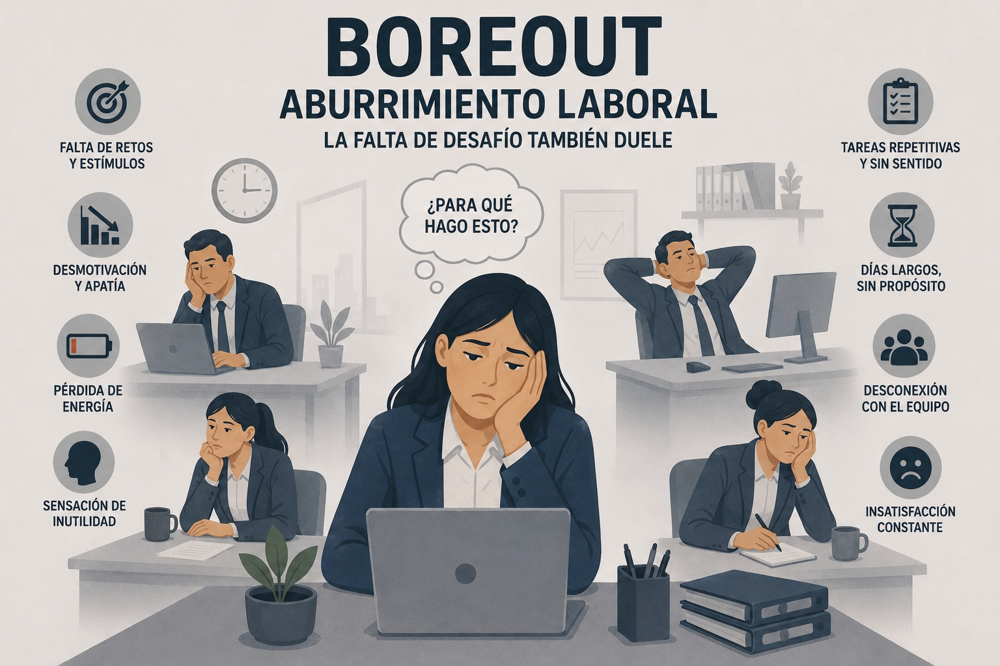

Riesgo psicosocial
Boreout o aburrimiento laboral
Aburrimiento crónico, infraexigencia y desinterés derivados de tareas poco estimulantes o carentes de sentido.

Definición y concepto
El Burnout (síndrome de estar quemado) y el Boreout representan extremos opuestos dentro del entorno laboral; sin embargo, ambos resultan igualmente perjudiciales para la salud de los trabajadores. Mientras que el Boreout se caracteriza por un “aburrimiento crónico” (FEUSO, s. f.), el Burnout está asociado con el agotamiento físico, emocional y mental derivado de las condiciones de trabajo.
El Boreout se relaciona con la experiencia de desempeñar actividades laborales percibidas como poco significativas o carentes de propósito. Esta falta de motivación y estimulación no solo disminuye el compromiso de los trabajadores con la organización, sino que también repercute negativamente en su bienestar físico y mental. Como consecuencia, pueden aumentar los niveles de insatisfacción laboral, la rotación de personal y presentarse una disminución en la productividad (FUNIBER, 2024).
Características
El Boreout se fundamenta en los siguientes elementos:
- Infraexigencia: describe el sentimiento ante la capacidad de poder rendir más en el trabajo de aquello que exige la empresa.
- Aburrimiento: expresa un estado de desgana y de duda, porque el empleado no sabe qué hacer durante todo el día.
- Desinterés: se detecta una ausencia de identificación con el trabajo (Unión General de Trabajadoras y Trabajadores [UGT], s. f.).
Causas
- Falta de planificación, sin estar claramente establecidas las funciones del puesto de trabajo.
- Duplicidad de funciones con otros puestos, con lo que uno de ellos se queda sin actividad real.
- Acaparamiento de las tareas más motivadoras por parte de los superiores o de compañeros con más antigüedad, dejando al resto las más repetitivas.
- Tareas monótonas durante todos los días y durante horas.
- Limitaciones que se establecen por parte de la dirección y que impiden a los empleados innovar y hacen que actividades que son potencialmente creativas se vuelvan tediosas.
- Falta de estimulación y reconocimiento por parte de sus superiores ante un buen desempeño o una propuesta innovadora.
- Insuficiente preparación y cualificación para el puesto, con lo que no se alcanzan los objetivos establecidos a pesar del esfuerzo por lograrlo, lo que generará un círculo vicioso de sentimientos de inutilidad y dejadez de funciones.
- Sobrecualificación en conocimientos o experiencia para un puesto de trabajo que no permite la promoción personal en la empresa, lo que conducirá a una insatisfacción y frustración al verse limitado y sin posibilidades de demostrar todo lo que sabe, y encontrándose supervisado en muchos casos por un jefe menos cualificado.
- Imposibilidad de ascenso o aumento del salario y falta de estimulación o reconocimiento por parte de sus superiores, por lo que no se asocia el esfuerzo en el trabajo a los resultados obtenidos. A la larga se produce indefensión aprendida (FEUSO, s. f.).
Consecuencias
El boreout sigue siendo un tema poco discutido en muchas organizaciones. A diferencia del burnout, que suele ser reconocido como un problema serio, el aburrimiento en el trabajo a menudo es minimizado o ignorado. Sin embargo, los empleados que sufren boreout no se sienten cómodos hablando sobre su falta de motivación por temor a ser percibidos como poco comprometidos o incluso despedidos. Esta falta de comunicación puede generar un círculo vicioso que empeora la situación tanto para el empleado como para la empresa (FUNIBER, 2024).
Los afectados pueden mostrar una baja productividad, absentismo laboral y un deterioro en sus relaciones interpersonales. Además, este síndrome puede desencadenar problemas de salud mental como la depresión y la ansiedad, aumentando el riesgo de enfermedades psicosomáticas (Universidad César Vallejo, 2024).
El aburrimiento crónico puede tener efectos similares al estrés laboral además, los empleados que sufren boreout tienen mayor propensión a buscar otras oportunidades laborales y a retirarse anticipadamente. En consecuencia, la empresa también se ve afectada por la rotación de personal y la reducción de la productividad (FUNIBER, 2024).
Síntomas en el trabajador
Entre los síntomas y manifestaciones más habituales del trabajador con boreout destacan:
- Cansancio físico y mental, incluso antes de haber empezado la jornada de trabajo, debido a la falta de descanso del día anterior y a la desmotivación con la que acude a su puesto.
- Excitabilidad debido a la frustración que le genera su empleo, sobre todo porque no sabe si habrá salida, ni cuánto tiempo más podrá aguantar la situación.
- Apatía y desmotivación a la hora de participar en las actividades de la empresa, que hacen que se limite a cumplir estrictamente con sus funciones y se marche cuanto antes del trabajo.
- Sensibilidad y suspicacia que, sin llegar a ser paranoia, le empujan a estar siempre alerta para hacer que hace delante de los demás, e intentar justificar así su función dentro de la empresa.
- Estrés crónico, que tendrá consecuencias negativas sobre su salud, como alteraciones de la función del sueño, variaciones de peso, problemas respiratorios, dolores musculares o de cabeza (FEUSO, s. f.).
Prevención y recomendaciones
- Mejorar el clima laboral promoviendo el trabajo en equipo.
- Aumentar el grado de autonomía y control en el trabajo.
- Definir claramente las funciones y el rol de cada trabajador en la organización.
- Establecer líneas claras de autoridad en la responsabilidad.
- Facilitar los recursos necesarios para el correcto desarrollo de la actividad.
- Programas dirigidos a la adquisición y destreza en la mejora del control emocional y la resolución de problemas.
- Mejorar las redes de comunicación y promover la participación de los trabajadores en la organización.
- Fomentar la flexibilidad horaria.
- Facilitar formación e información sobre el trabajo a desarrollar (FEUSO, s. f.).
Material de apoyo
Mirar video en YouTube (WsxKExNXqe4) Mirar video en YouTube (xlPBWICOolA)Referencias bibliográficas
Federación de Enseñanza de USO (FEUSO). (s. f.). Salud laboral (Boletín n.º 437). https://feuso.es/images/docs/boletines/FEUSO_SALUD_LABORAL437.pdf
FUNIBER. (2024, 3 de diciembre). Boreout: el peligroso síndrome del aburrimiento en el trabajo. https://www.funiber.blog/direccion-empresarial/2024/12/03/boreout-el-peligroso-sindrome-del-aburrimiento-en-el-trabajo
OpenAI. (2026). Imagen conceptual sobre Boreout o Aburrimiento laboral con subtítulo "La falta de desafío también duele" mostrando desmotivación y tareas repetitivas [Imagen generada por IA]. ChatGPT. https://chatgpt.com
Persona Común. (2021, 26 de febrero). Mi trabajo me aburre ¿Por qué? - Síndrome del Boreout [Video]. YouTube. https://www.youtube.com/watch?v=WsxKExNXqe4
Taprega. (2025, 25 de febrero). Síndrome de Boreout: Cómo el aburrimiento laboral arruina tu vida y qué hacer para superarlo [Video]. YouTube. https://www.youtube.com/watch?v=xlPBWICOolA
Unión General de Trabajadoras y Trabajadores (UGT). (s. f.). Fichas del Observatorio (Ficha nº 19). https://www.ugt.es/sites/default/files/node_gallery/Galer-a%20Publicaciones/FichasObservatorio%20%28%29%2019.pdf
Universidad César Vallejo. (2024, 28 de agosto). Síndrome de boreout: la amenaza silenciosa para la salud mental de los talentos. https://www.ucv.edu.pe/noticias/sindrome-de-boreout